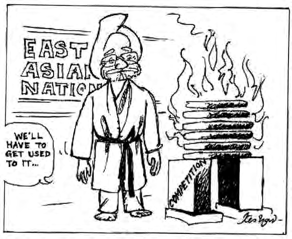

100% Google Docs Compatible with Images (Localhost-Sync)
✅ Copied Successfully! Now go to your Google Doc and Press Ctrl+V
द्वितीय विश्व युद्ध के बाद यूरोप के देशों को अपनी अर्थव्यवस्थाओं को फिर से खड़ा करने के लिए भारी संघर्ष करना पड़ा। अमेरिका ने 'मार्शल योजना' (Marshall Plan) के तहत यूरोप की आर्थिक मदद की।
यूरोपीय संघ एक आर्थिक और राजनीतिक मंच बन गया है। इसकी अपनी मुद्रा 'यूरो' (Euro) है और इसका अपना झंडा, गान और स्थापना दिवस है।
चित्र विवरण: यूरोपीय संघ का ध्वज। सोने के रंग के 12 सितारे यूरोप के लोगों की एकता और मेल-मिलाप का प्रतीक हैं।
दक्षिण-पूर्व एशियाई राष्ट्रों का संगठन (Association of South East Asian Nations) 1967 में बैंकॉक घोषणा-पत्र पर हस्ताक्षर करके बनाया गया। इसके संस्थापक देश इंडोनेशिया, मलेशिया, फिलीपींस, सिंगापुर और थाईलैंड थे।
उद्देश्य: आर्थिक विकास को तेज़ करना, सामाजिक और सांस्कृतिक विकास हासिल करना, और कानून के शासन पर आधारित क्षेत्रीय शांति बनाए रखना।

चित्र विवरण: आसियान का प्रतीक चिह्न। धान की दस बालियां दक्षिण-पूर्व एशिया के दस देशों को इंगित करती हैं।
1949 की माओ के नेतृत्व वाली कम्युनिस्ट क्रांति के बाद, चीन ने सोवियत मॉडल अपनाया। लेकिन 1978 में डेंग श्याओपिंग (Deng Xiaoping) ने चीन में आर्थिक सुधारों और 'खुले द्वार की नीति' (Open Door Policy) की घोषणा की।
चीन ने अपनी अर्थव्यवस्था को चरणबद्ध तरीके से खोला: 1982 में खेती का निजीकरण किया और 1998 में उद्योगों का। 2001 में चीन विश्व व्यापार संगठन (WTO) में शामिल हो गया। आज चीन अमेरिका को टक्कर देने वाली सबसे बड़ी आर्थिक ताकत बन चुका है।
चित्र विवरण: चीन की बढ़ती आर्थिक ताकत का एक कार्टून चित्रण, जहाँ चीन विश्व राजनीति के परिदृश्य में एक विशाल ड्रैगन की तरह उभर रहा है।